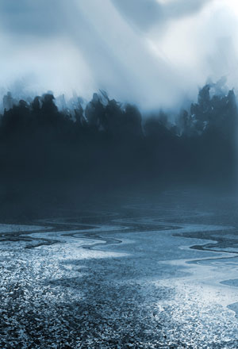
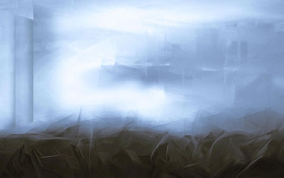
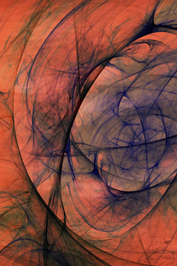
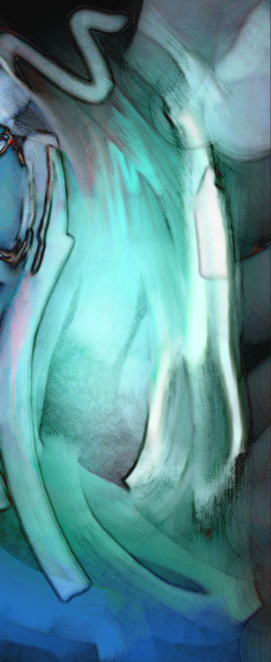
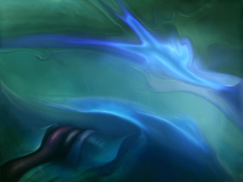
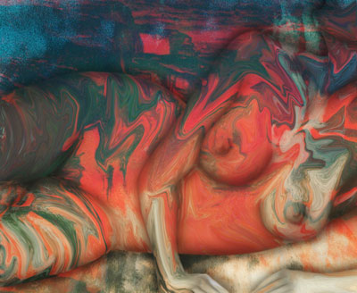
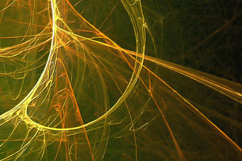
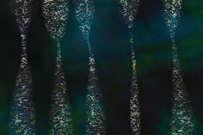
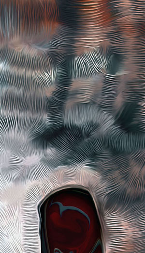

Jester-Knight
Literature
Film
Music
Visual Art
Tributes
Submissions
Links
Contact
Al Carfagna
About the Artist
Graphic designer, musician and artist Al Carfagna has always been a proponent of using technology to further the cause of art. His award-winning digital paintings have been displayed throughout New England and have graced a number of books and CD covers. Al is the brother of noted poet Ric Carfagna, and has created cover art for several of his books. Al and his wife Joanne, an abstract painter, reside in Revere, Massachusetts.
Artist’s Statement
In 1905, a group of German expressionist artists formed “Die Brucke” (The Bridge). They saw their work as a bridge between the art of the past and that of the future. As a Digital Painter, I am, in essence, attempting to create an artistic bridge into the 21st century. Many associate the term ‘digital’ with photography, assuming some connection with images downloaded from a digital camera. My current work contains no photographic images at all. My abstract and neo-surrealist pieces are painted on a digital canvas, using an array of virtual tools: paints, brushes, pens, airbrushes, etc.. I create my art using Adobe Photoshop and Corel Painter, switching often between the programs to take advantage of the unique capabilities of each. While the computer is a powerful tool, it is only a tool, as is a paintbrush, a pencil, or a piece of chalk. It is the skill and inspiration of the artist that gives any tool, in any medium, its validity. My larger-scale canvases are meant to convey traditional (in the broader sense of the word) techniques, using non-traditional tools, in an effort to create a ‘bridge’ - to advance the philosophy that, in the end, regardless of the tools used to create it, it is the art that matters.
Alfred Carfagna
All paintings are available as prints on canvas or fine art papers, using non-fading ultrachrome inks. Contact Al at acjc99@comcast.net for details.
About the Art (click image to view full size):
Camiann (Blue)

Camlann (Blue) - Camlann is the legendary site of the final battle of King Arthur. Its exact location has been a source of speculation for centuries. The piece was inspired by a passage in Tennyson's "Idylls of the King":
...And there, that day when the great light of heaven
Burned at his lowest in the rolling year,
On the waste sand by the waste sea they closed.
Nor ever yet had Arthur fought a fight
Like this last, dim, weird battle of the west.
A deathwhite mist slept over sand and sea:
Whereof the chill, to him who breathed it, drew
Down with his blood, till all his heart was cold
With formless fear; and even on Arthur fell
Confusion, since he saw not whom he fought.
For friend and foe were shadows in the mist,
And friend slew friend not knowing whom he slew...
City of Spirits

City of Spirits - Even with the twisted wreckage in the foreground and shadows of the twin towers, this piece conveys a sense of serenity in the midst of chaos. A tribute to the best in all of us.
Waveform

Waveform - A study in depth, color, and transparency - Although an optometrist friend of mine swears it resembles a particular retinal disorder!
Water (Leaving) for Gravity

Water (Leaving) for Gravity - One of my first really large digital pieces ( 60" X 24"). The title is derived from a line in an Ani Difranco song; "The trouble with water is - she'll always leave you for gravity..."
SIP 7

SIP 7: The title refers to secret plates installed in the Panama Canal during WW II to allow the canal to function in the event the locks were destroyed or damaged in the war. It is a metaphor for things that happen beneath the surface, behind the scenes.
Soft Universe
Soft Universe: A soft, warm, and colorful plane of existence - with no sharp edges or alarm clocks.
Chameleon

Chameleon: This piece has the distinction of actually being "Banned in Boston" ! It was scheduled to be on exhibit at Logan Airport for the dedication of a new passenger terminal. When I attended the opening, the piece was conspicuously absent. After a series of inquiries, I was informed that the piece was deemed inappropriate for public display - in 2005!
Charmed Particality

Charmed Particality: I have a layman's fascination with particle physics and quantum mechanics. An artistic vision of interaction at the subatomic level.
Los Nuevos Videntes

Los Nuevos Videntes: From Carlos Casteneda - translation: The New Seers. New Seers...New Mystics...Hmmm.
Mortal Coil

Mortal Coil - An analogous reference to the mind/body/soul connection (with an obvious nod to Shakespeare). The maze-like quality of our journey through life.